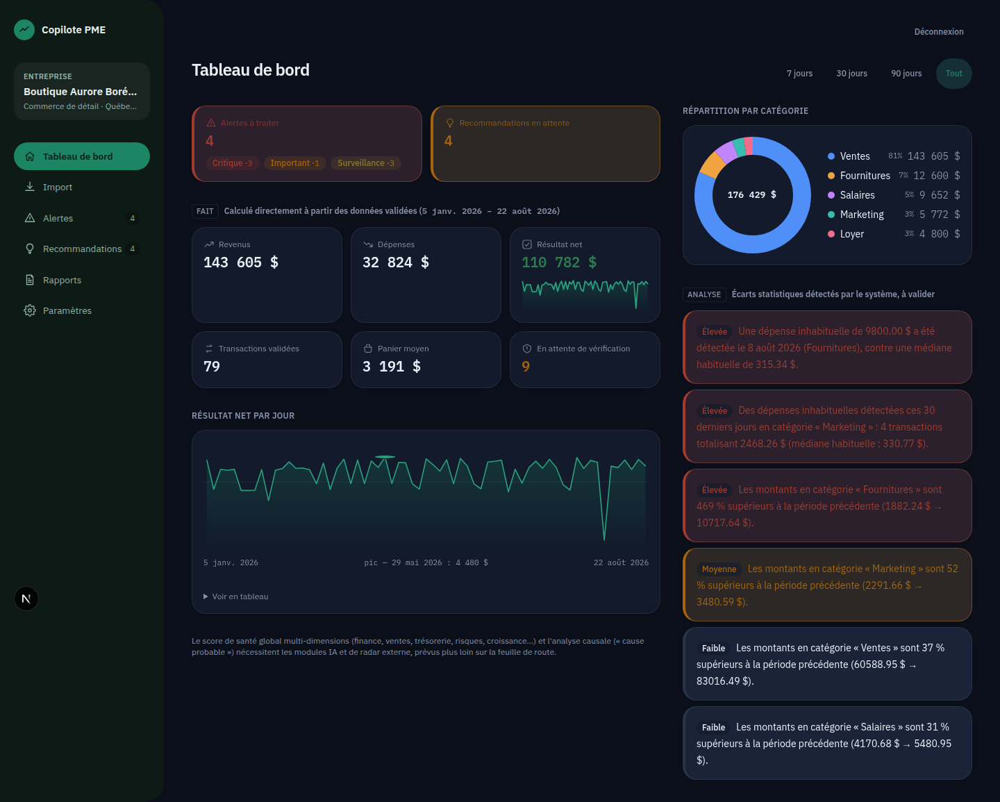

Gestion de commerce · IA générative & automatisation · Analyse de données
Je transforme des données brutes en décisions commerciales — plus vite, grâce à l'IA.
Excel avancé, Python, SQL et statistiques appliquées — combinés à l'IA dans mon flux de travail (automatisation, scripts, génération de rapports) pour livrer plus rapidement, sans sacrifier la rigueur.
01 — Profil
Du terrain commercial à l'analyse de données
Mon parcours en Gestion de Commerce m'a donné une compréhension fine des enjeux business — marge, rentabilité, performance opérationnelle. Je complète cette base par des compétences en analyse de données : Excel avancé, Python, SQL, Power BI/Tableau et statistiques appliquées.
Je conçois des outils d'aide à la décision — tableaux de bord interactifs, analyses statistiques, requêtes SQL — qui transforment des données brutes en informations exploitables, du nettoyage des données jusqu'au livrable final documenté.
Je vais plus loin en intégrant l'IA à mon flux de travail : automatisation de tâches répétitives, génération assistée de scripts Python, structuration de rapports par prompts. L'objectif est concret — réduire les délais de production pour concentrer le temps sur l'interprétation et la recommandation, là où se trouve la vraie valeur ajoutée pour l'entreprise.
Chaque projet du portfolio est documenté dans un README dédié, avec le contexte métier qui justifie chaque choix d'analyse.
02 — Portfolio
Sept projets, sept problèmes métier
Chaque lien mène vers le dossier complet du projet : données, code et README détaillé.
Copilote PME
SaaS de pilotage et d'aide à la décision pour PME : ingestion multi-format (CSV/Excel/PDF, OCR), détection d'anomalies, alertes et recommandations automatiques. Next.js (TypeScript) · FastAPI (Python) · PostgreSQL · pipeline d'ingestion →
02IA appliquéeIntégration IA au flux de travail
Comment l'IA générative (Claude Code) s'intègre à la production de code et d'analyses — avec preuves à l'appui (commits, corrections documentées), pas juste une affirmation. Claude Code · automatisation · revue et validation humaine → 03FinanceBilan de démarrage & analyse financière
Modélisation financière complète du lancement d'une entreprise : montage financier, états financiers, ratios, seuil de rentabilité, rentabilité par produit. Analyse financière · ratios & DuPont · Python · Acomba → 04MarketingGeomarketing Québec
Score d'opportunité commerciale par région (population, revenu, croissance, concurrence) à partir de 257 755 établissements et des données ISQ. Python · pandas · web scraping · SQL · modélisation de score → 05VentesDashboard Ventes & Performance
Tableau de bord Excel interactif (segments, TCD, graphiques dynamiques) pour piloter les ventes par région et catégorie. Excel avancé · Python (pandas/openpyxl) · nettoyage de données → 06RHAnalyse des performances RH
Statistiques descriptives et détection d'outliers (règle 1,5×IQR) sur 311 employés pour identifier les vrais facteurs de performance. Python (pandas/matplotlib) · statistiques descriptives · outliers → 07StatistiquesAnalyse statistique et tests d'hypothèses
Trois échantillons (225 employés, 150 salaires, 2 330 pièces) : distribution, corrélation, intervalle de confiance et quatre tests d'hypothèses. Statistiques inférentielles · khi-deux · régression · Python →03 — Compétences
Outils et méthodes
IA appliquée
Tableurs & BI
Programmation
Statistiques
Analyse financière